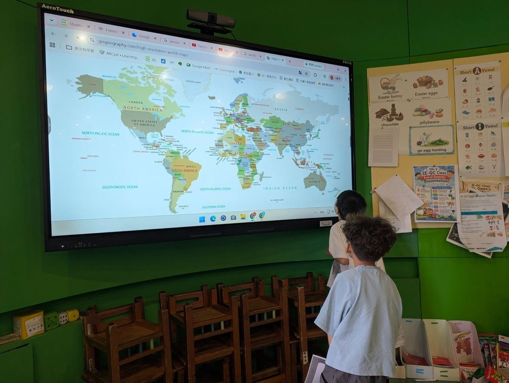
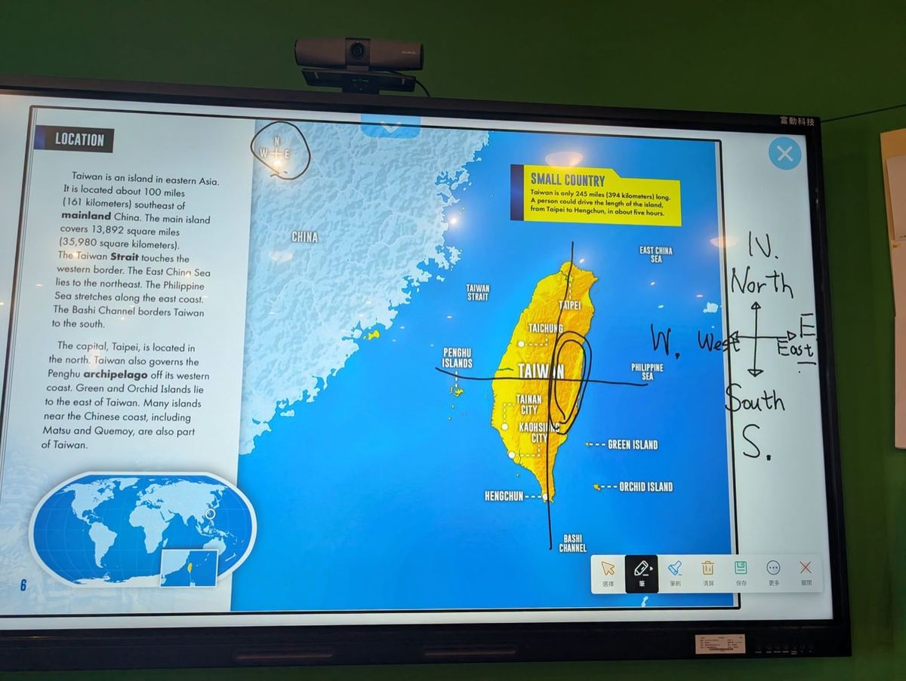
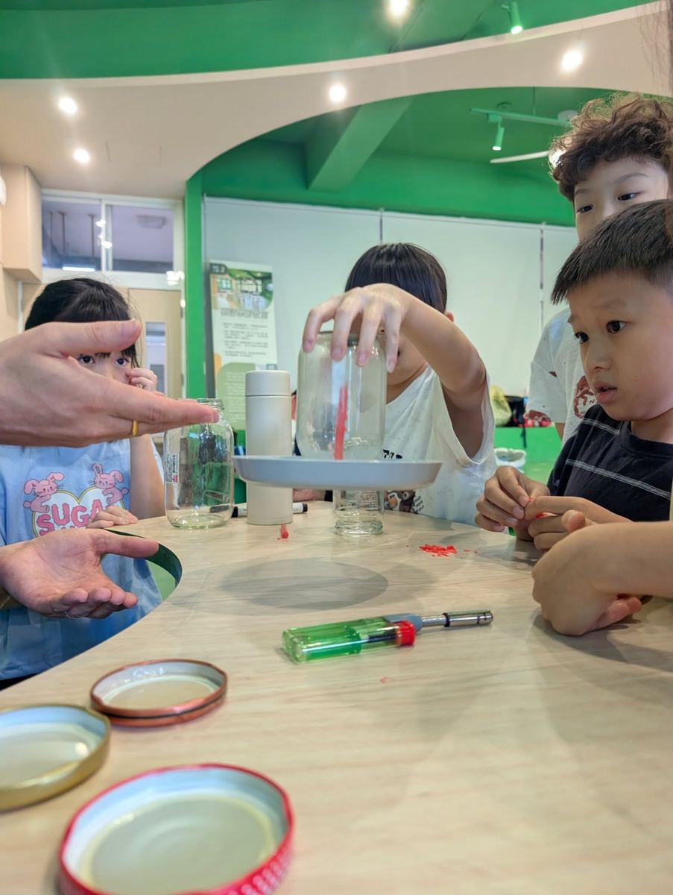
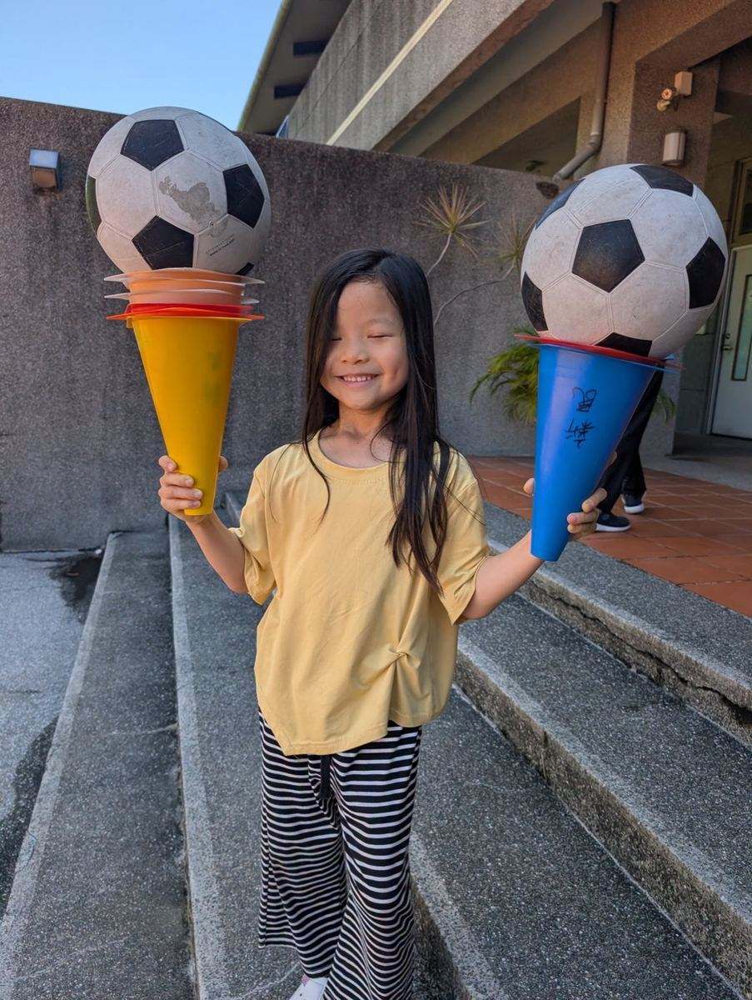
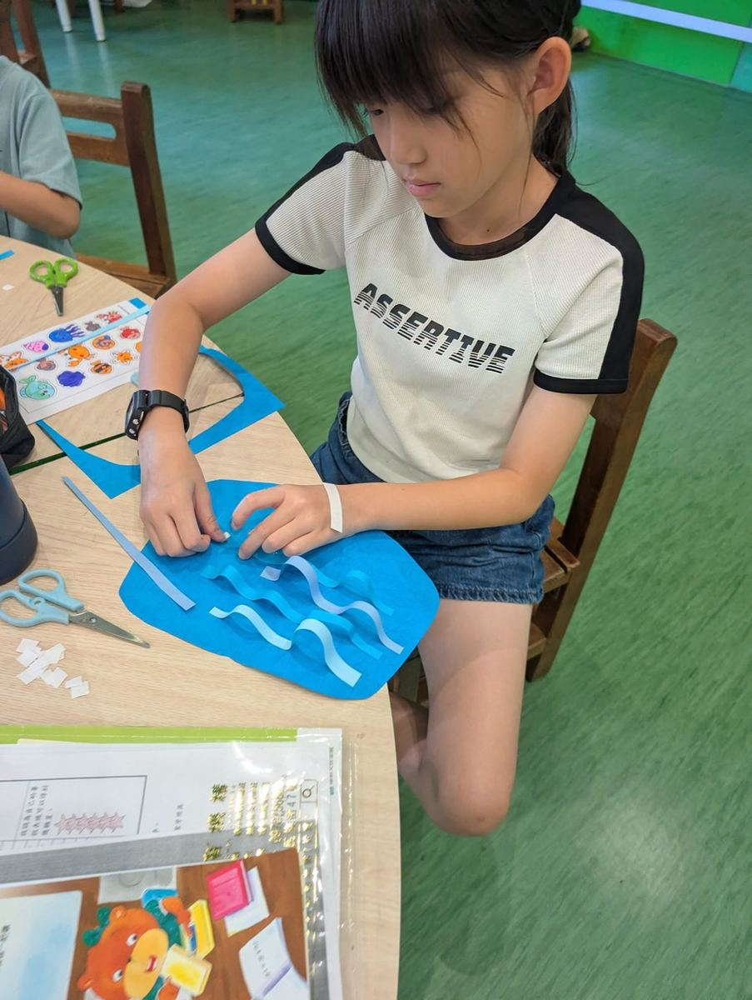

Summer break isn't just for resting — it's the perfect time for children to open their eyes wider, grow their confidence, and discover the world through new experiences. That's exactly what happened during the first week of IE-GC Summer Camp at Hsinmin Elementary!
Week 1 centered on two exciting themes: Animal Adjectives and Taiwan. Rather than memorizing words from a list, students encountered English through videos, reading, games, physical activities, art, and science experiments — letting language grow naturally in real, meaningful situations.
Every morning, students also began practicing a Daily Journal — writing one English sentence to record how they felt and what was on their mind. After writing, each student shared their entry one-on-one with the teacher. English wasn't just words on paper — it was something to say out loud, with confidence.





Here's a look at what made each day memorable:
Adjectives like big / small, fast / slow, and strong / weak weren't just words to memorize — they became tools for describing animals, characters, and even themselves. Through games, art, and storytelling, these words became part of how children think and express themselves.
Week 1, we have liftoff. Next week, the adventure continues — as students take their curiosity and their growing English confidence to explore even more of the world. 🌎
IE-GC Summer Camp｜第一週精彩回顧
暑假不只是休息，也是孩子打開視野、累積自信的好時機。IE-GC 暑假夏令營第一週，我們以動物Adjectives 形容詞以及TAIWAN 作為主要學習核心，搭配主題素材，透過影片、閱讀、遊戲、體育、美術與科學實驗，引導孩子在情境中自然接觸英文、練習表達，也用不同方式探索世界。
從認識台灣在世界地圖上的位置開始，進一步認識台灣各縣市，也透過動物主題延伸英文描述能力。例如：big / small、fast / slow、strong / weak 等形容詞，不只是單字記憶，而是透過遊戲、閱讀與創作，變成孩子能理解、能使用的語言。
每天早上，孩子們也開始練習書寫簡單的 Daily Journal，用一句英文記錄自己的情緒與狀態。完成後，再和老師進行一對一分享，讓英文不只是寫在紙上，也能真正說出口。
📚 Week 1 Learning Highlights
✨ Opening Day & Adjectives｜開營暖身、認識形容詞、製作形容詞辭典
🗺 Taiwan Map｜認識台灣地理位置與各縣市，從「我們在哪裡」開始看見世界
⚽ Sports & Teamwork｜透過足球與默契活動，培養反應力、合作與團隊精神
🌊 Animals & Art｜延伸動物與海底生物主題，結合英文學習與美術創作
🧪 Science Time｜透過實驗認識氧氣與二氧化碳，並製作熱氣球，讓孩子在動手做中學習
🧩 Review & Riddles｜透過謎語遊戲與互動活動，複習本週形容詞學習內容
IE-GC 課程希望讓孩子在真實、有趣的活動中使用英文，也讓語言學習不只停留在課本，而是連結到生活、世界、創作與表達。
第一週，我們順利起飛。接下來，孩子們將繼續帶著好奇心，用英文探索更大的世界。
Words About Language Learning & Expression英語學習角 · 和語言學習與表達有關的小單字
Six key words — tap 🔊 to listen, then try the conversation and quiz.
六個關鍵字，點 🔊 聽發音，再試試對話和小考。
情境：兩個同學聊起他們在英文夏令營學到的事。